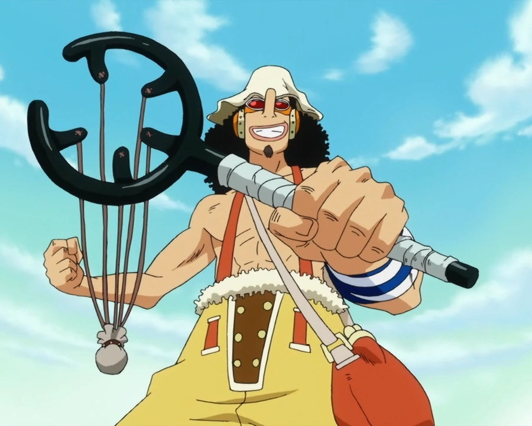

Усопп
Описание.
Усопп - нынешний снайпер команды Мугивар с наградой 500 миллионов белли, его навыки стрельбы рогаткой лучшие в мире Ван пис. Будучи трусом он боится любой опасности, но когда он понимает что без него его команде не победить он набирается смелости и чудом побеждает. Так же он является превосходным лжецом и для запугивания врагов он врет что у него 5000 последователей, но сейчас это отчасти правда ведь у мугивар действительно есть флот из 5000 человек.

Оружия:
1.Гинга Патинко.
Гинга Патинко - первое основное оружие Усоппа, с ним он стрелает различнами снарядами, от взрывных шаров и тухлых(или свежых как приманку для диких животных) яиц до связки сюрикенов и сигнального шарика(как сигнальная ракета).
Гинга Патинко
Кабуто
2.Кабуто.
Кабуто - оружие которое он впервые использовал скрываясь под именем Согекинг. Оно имеет 5 резинок вместо 2 как у обычных рогаток а так же он просто гиганский относительно обычных рогаток, его длина около 1,5 метров. Это оружие что-то среднее между посохом и рогаткой, и Усопп иногда использует его чтобы бить им как палкой. Для его создания Усопп использовал ракуши, ракушки которые имеют различные свойства анологичные современным технологиям (печь, лампочка, фотоапарат) и эта ракуша могла выпускать газ давлением, что только ускоряло снаряд. Усопп и им стрелял очень различные снаряды которые похожи но мощнее прежних.
3.Куро Кабуто
Куро Кабуто - нынешнее и последнее оружие Усоппа, которое вроде как живое и которое он приобрел за 2-х летний таймскип, когда все Мугивары на разных концах света тренировались чтобы стать сильнее. Эта рогатка чуть больше Гинга Патинко но может выростать до гиганских размеров и даже чуть больше чем Кабуто поглащая воду. В увуличенной состоянии Куро Кабуто может самостоятельно собирать снаряды кусая большие куски земли задней частью места, куда кладут снаряды для выстрела, так же в этой форме все выстрелы мощнее в несколько раз. Причем сами снаряды которыми Усоппа тоже стали другими, теперь это не просто предметы а зерна растений, которые выростают за секунду, таких как бамбук, гиганская венерина мухоловка, вонючий цветок, банан-лодка, листья-весла, взрывное растение чей взрыв в разы сильнее чем взрывные шарики предыдущих рогаток ну и так далее.

Куро Кабуто
А так же Усопп пользуется как оружием свой молоток, ракуши, собственные изобретения и различные ситуационные предметы, такие как чихательный перец, соль, фейковые 10 и 5 тонные молоты(они были бочкой и шариком на палке)